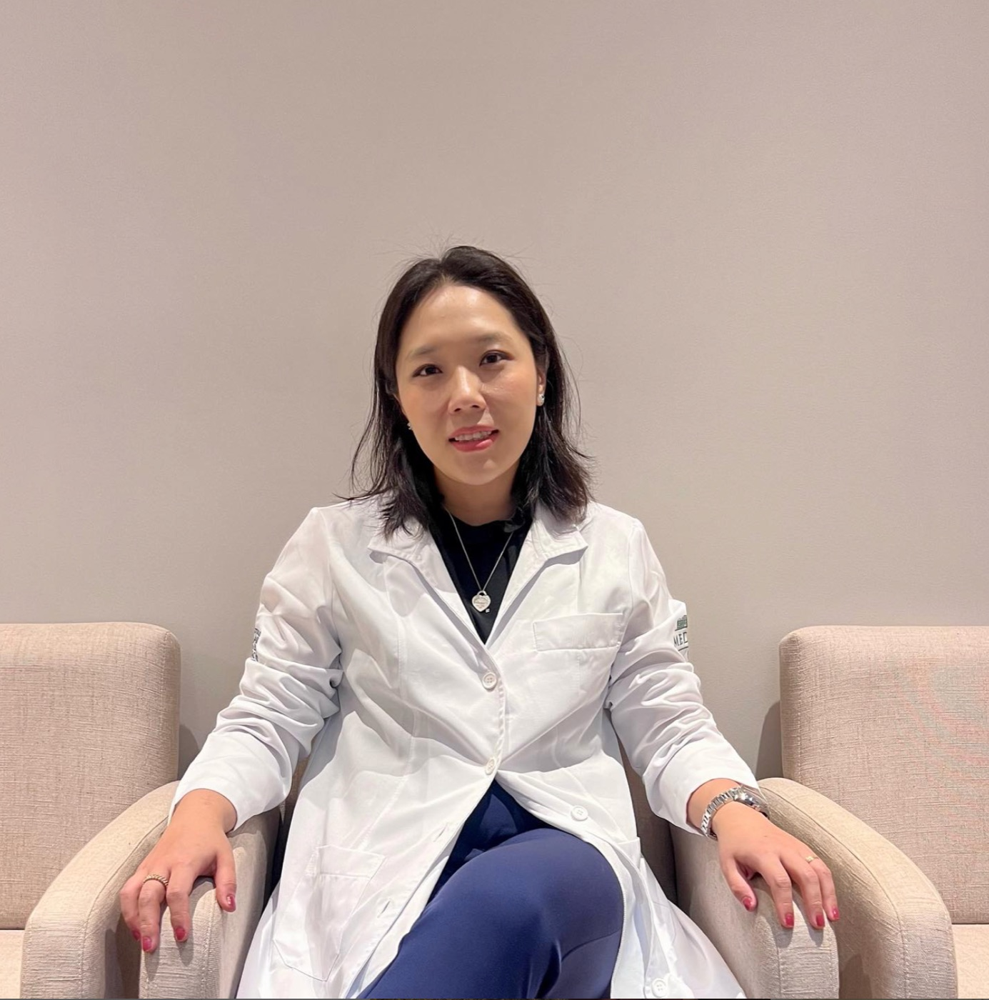
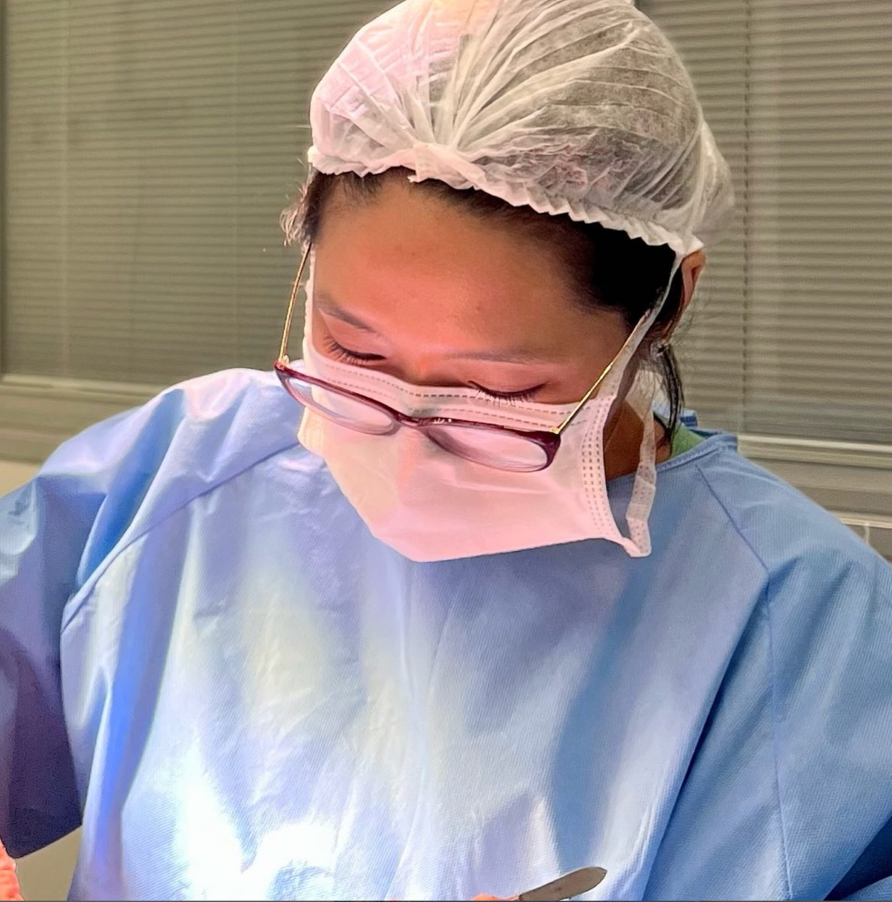
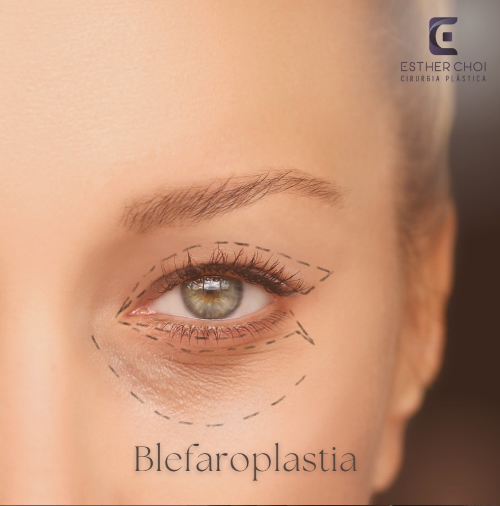
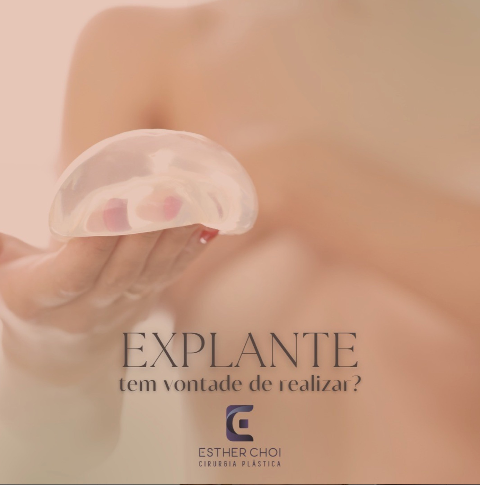
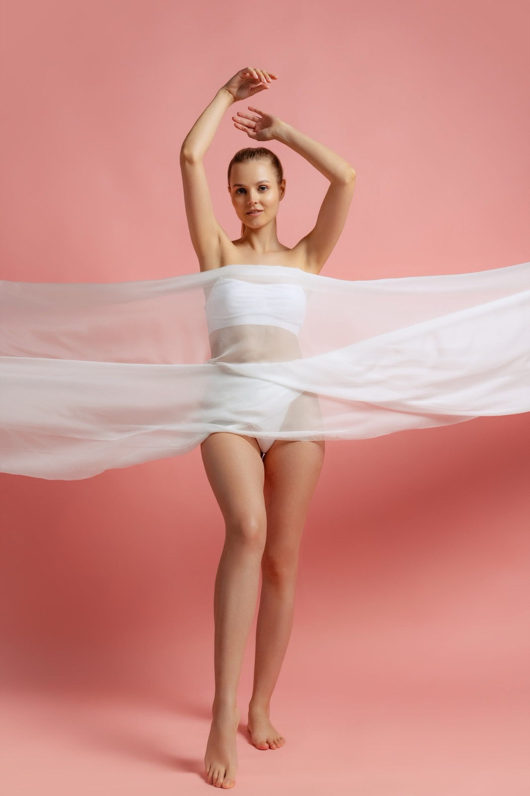
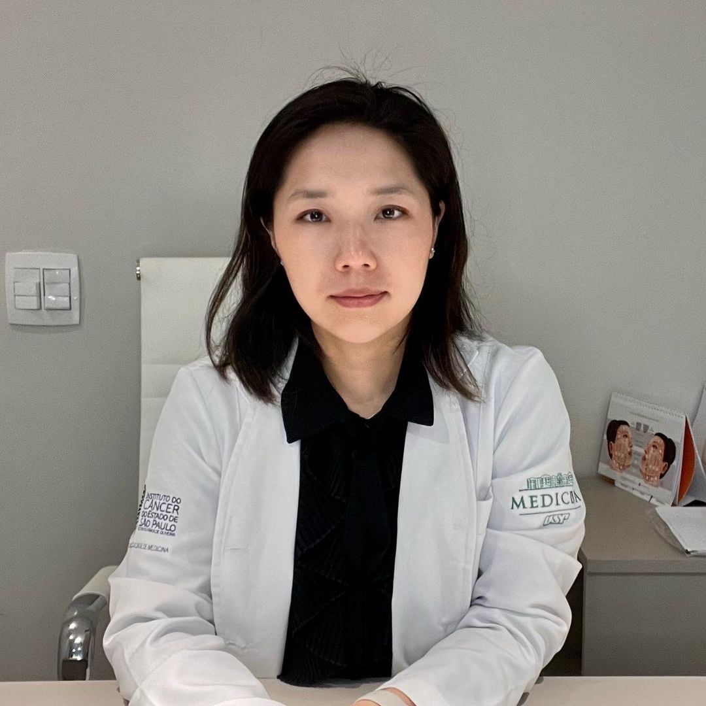

Cirurgiã Plástica · CRM 144238-SP · RQE 65968
Cirurgia plástica com
experiência, rigor técnico
e leitura estética precisa
Formação integral na USP e no Hospital das Clínicas, com especialização em cirurgia de ocidentalização das pálpebras, cirurgia mamária e reconstrução.

Filosofia de trabalho
Cada procedimento parte da anatomia e da história de quem senta na cadeira
A cirurgia plástica muda a forma como a pessoa se reconhece. Por isso o plano cirúrgico nunca é padrão: ele considera a estrutura de cada rosto e de cada corpo, a etnia, a expectativa real e o que a técnica consegue entregar com segurança.
O compromisso é com resultado natural, indicação honesta e acompanhamento próximo em todas as etapas, do pré ao pós-operatório.

Áreas de atuação
Três frentes principais
Da cirurgia de pálpebra asiática à reconstrução mamária e aos tratamentos de consultório, cada frente tem protocolo próprio e indicação individualizada.

01 · Estética oriental
Cirurgia de ocidentalização das pálpebras
Também chamada de dupla pálpebra, cria uma prega palpebral definida e harmônica com os traços asiáticos, respeitando a expressão natural do olhar. Inclui a avaliação de blefaroplastia quando há excesso de pele ou bolsas.
- Dupla pálpebra
- Blefaroplastia superior
- Blefaroplastia inferior
- Correção de epicanto

02 · Cirurgia mamária
Cirurgias das mamas e reconstrução
Formação de fellow em reconstrução e cirurgia mamária no Instituto do Câncer do Estado de São Paulo. Planejamento que altera volume, formato e posicionamento com foco em simetria e naturalidade.
- Mamoplastia de aumento
- Mamoplastia de redução
- Implante de silicone
- Explante
- Remodelação
- Reconstrução

03 · Estética avançada
Procedimentos minimamente invasivos
Tratamentos realizados em consultório para textura de pele, flacidez e contorno, combinados de acordo com o objetivo de cada paciente e sem afastamento das atividades.
- Laser
- Preenchedores
- Bioestimuladores de colágeno
- Ulthera®
- Toxina botulínica

Sobre a Dra. Esther Choi
Uma trajetória construída inteira dentro da escola da USP
Quis ser médica desde criança. Entrei aos 17 anos na Faculdade de Medicina da USP e me apaixonei pela cirurgia ainda na graduação, acompanhando equipes cirúrgicas nas noites e nos fins de semana livres.
-
Graduação
Faculdade de Medicina da USP · seis anos de formação em período integral.
-
Residência · Cirurgia Geral
Hospital das Clínicas da USP · dois anos, pré-requisito para a cirurgia plástica.
-
Residência · Cirurgia Plástica
Hospital das Clínicas da USP · três anos dedicados à especialidade.
-
Fellow · Reconstrução e Cirurgia Mamária
ICESP, Instituto do Câncer do Estado de São Paulo · um ano de complementação como especialista.
-
Doutorado
Tese aprovada pelo Hospital Sírio-Libanês. Seguimento contínuo de estudo e aprimoramento.
Agende sua avaliação
Uma conversa para entender
o que faz sentido para você
Na avaliação, a Dra. Esther examina, esclarece indicações e riscos e monta o plano possível para o seu caso. Sem promessa de resultado padrão.
Falar no WhatsApp